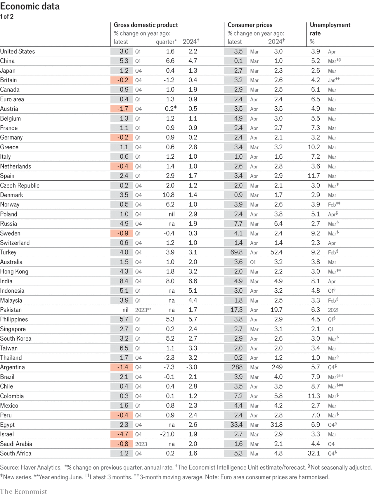
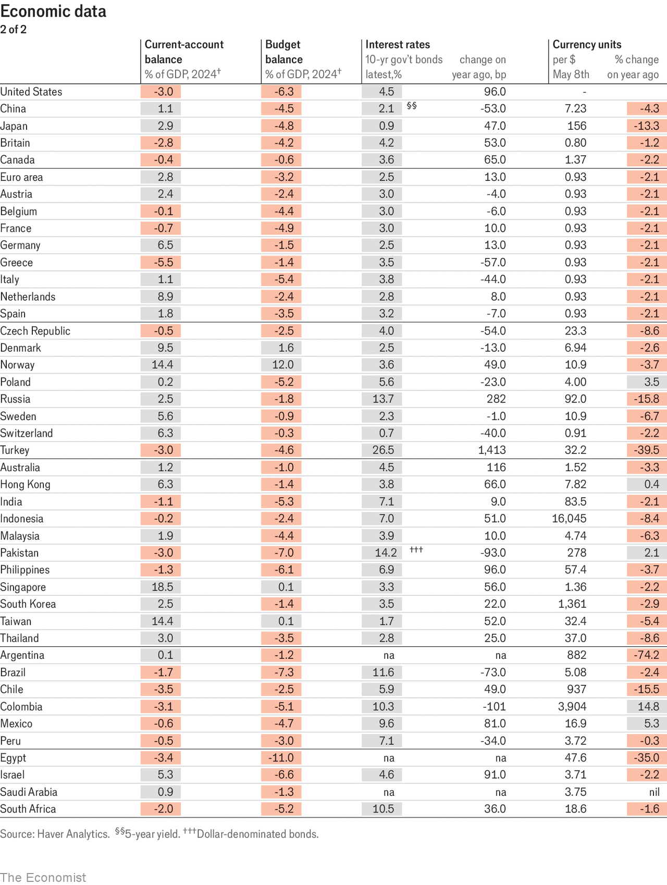
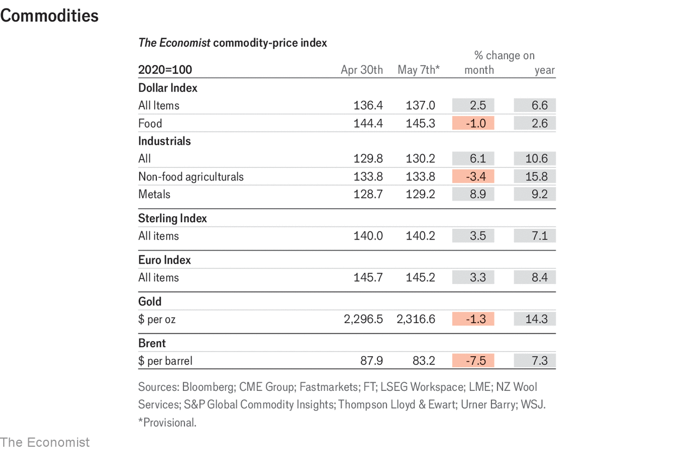
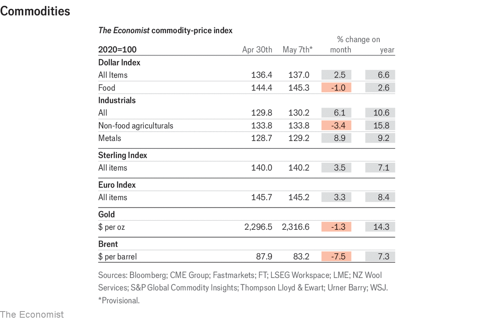

Economic & financial indicators | Indicators
Economic data, commodities and markets
May 9th 2024
 
This article was downloaded by zlibrary from https://www.economist.com/economic-and-financial-indicators/2024/05/09/economic-data-commodities-and-markets